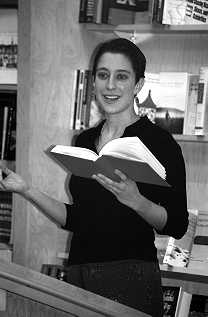

Bettinger-Lopez was as surprised as anyone else to learn about
the community she didn't know existed. "I thought 'Wow-this is
fascinating,'" she said, "Who would've thought?"
Now she's an expert on the subject.
More than sixty people gathered at Columbia Bookstore this past
Thursday, December 30, to listen to Bettinger-Lopez discuss her
newly published book, Cuban-Jewish Journeys: Searching for Identity,
Home, and History in Miami.
The book, the author's first, was published this fall by the
University of Tennessee Press. Bettinger-Lopez spent more than
an hour speaking about the book, showing slides and answering
questions from a largely enthusiastic, supportive group of listeners.
The presentation and book signing focused on various diverse
elements of Cuban-Jewish identity in Miami, from architectural
similarities of Cuban-Jewish synagogues in Miami and Havana, to
interracial dating among Ashkenazic and Sephardic Jews, to the
term "Jewban"-a word embraced by the Cuban Jews to describe their
heritage.
" 'Jewban' represents a new notion of community selfhood, a
confident group identity," Bettinger-Lopez said. "The term shows
Cuban Jews becoming more confident with themselves." A number
of the themes that Bettinger-Lopez writes about in Cuban-Jewish
Journeys, such as political activities among the Cuban-Jewish
community, and machismo culture among Cuban-Jewish males, were
brought to life at the book signing by Cuban-Jewish members of
the audience, who extemporaneously and passionately voiced their
own experiences and viewpoints. Bettinger-Lopez, who was an anthropology
major and honors student at the University of Michigan, began
the book as her senior thesis. "I stumbled upon the Cuban-Jewish
community while I was looking at issues of identity when I was
studying anthropology at Michigan," she says.
"I was becoming really interested in identity with an on-the-ground
focus-not just theory," Bettinger-Lopez said, "and I decided to
go back home because I never knew this community existed."
Bettinger-Lopez has received positive feedback from readers.
"The most popular chapters," she says, "are the personal ones
where I talk about my relationships and experiences with the community."
She describes writing the book as "wonderful," and possibly
the most important experience of her life.
Bettinger-Lopez says the most difficult aspect of writing the
book was listening to recent Cuban-Jewish arrivals talk about
their immigration difficulties. She felt guilty when interviewees
asked for legal assistance that she wasn't able to provide-and
those feelings played an important part in Bettinger-Lopez's decision
to attend law school.
For that reason, Bettinger-Lopez hopes that publishing the words
of the Cuban-Jewish immigrants will have a positive effect. "Disseminating
the information is important," she said.
For Bettinger-Lopez, and those who read her book, those words
can be an inspiration on many levels. "I keep remembering these
people's voices," Bettinger-Lopez says, "and that helps me put
everything in perspective."